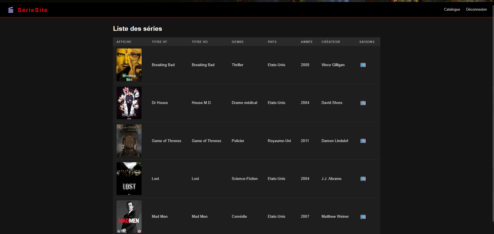

Description
Jeu sur DELTARUNE (qui est surnommé Deltarune: Fate Reclaimed) - est un petit projet pour un fan jeu qui reprend l'histoire des audios Youtube créés par SillySebastien pour la communauté fan d'un jeu original DELTARUNE créé par Toby Fox.
Outils utilisés
- Kristal
- Tiled
- VS Code
Tâches
Contenu du jeu :
il est possible de se déplacer sur les cartes pixels, intéragir avec des objets et de voir les cutscene spéciales en cours du jouabilité :

Code Lua :
Le jeu est basé sur langage de programmation Lua qui est un langage script "simplifié" pour faire des autres applications pour les étendre, ou même créer des sites web avec lui.
